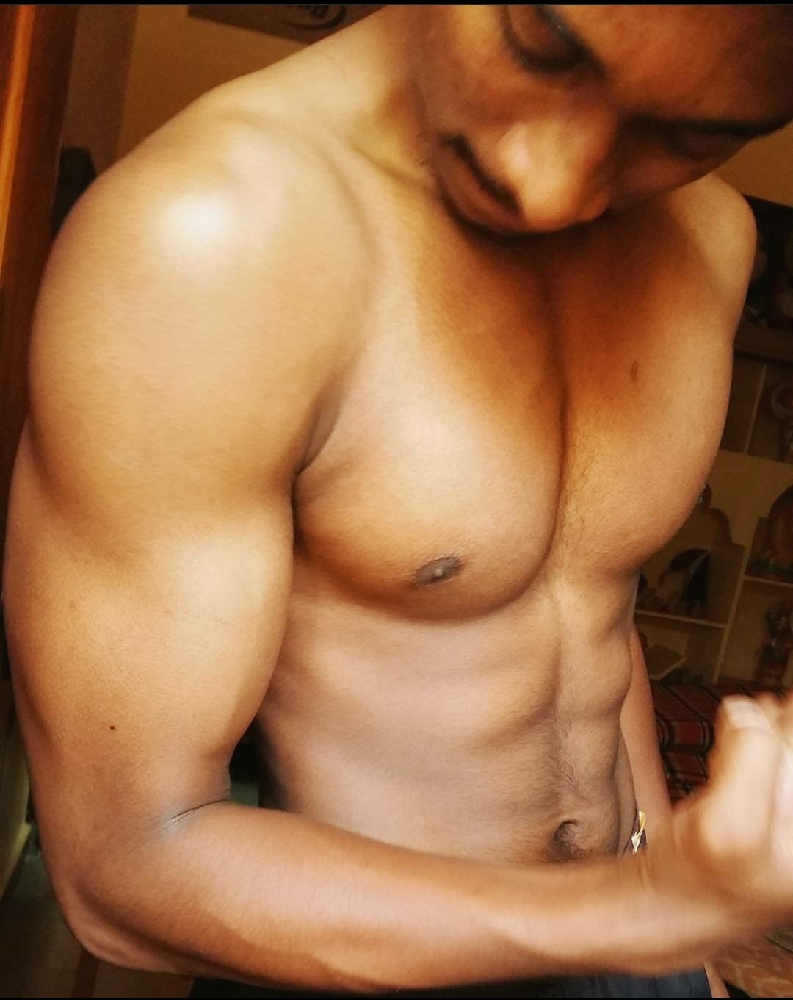
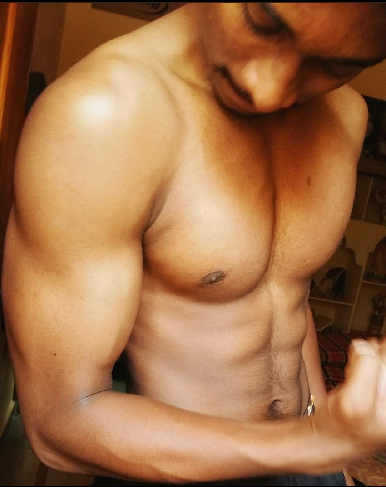

I'm Koushik
A Software Developer.

I'm Master of Science in Computer Science. I'm passionate about Web Development, Application Development and Cloud Computing.

Designed multiple full stack projects implementing DOM manipulation, jQuery, Node.js, MongoDb.
The page you are viewing right now is the first website I built in my career and My future projects will be based on MERN and MEAN stack.
You can access my projects here: GitHub.

Microsoft Azure fundamentals certified
Continuous learning and development with wonderful Cloud Computing course in my Graduate program.
Familiar with AWS EC2 and CloudSim framework.

Built a web crawler with Python scrapy, simple Indexer and document ranking model using python based on BM25 ranking.
On course to building strong fundamentals through Information Retrieval course in my graduate program.
More exciting projects coming my way.
 

Sports and physical fitness plays an important role in long term well-being and keeps your mind active.
My physical transformation has been amaizing teaching me many important life lessons.
In addition to this, meditation is something which helps me cope with ups and downs in life.


I'm into sports like Swimming, Cricket, Volleyball and Table Tennis from my Childhood.
I've recently developed an interest in Chess which is a great game for improving analytical thinking, patience and keeps competitive spirit alive.
Bowling is a fun game which helps me to spend quality time with my friends and family.
Let's connect and build next-gen innovative applications.
Contact Me